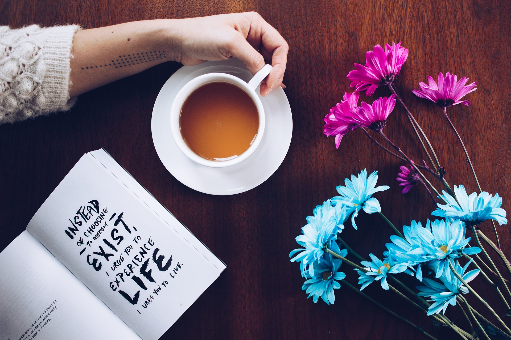

Скільки себе пам’ятаю, любила слухати історії. «Розкажи мені історію!» — зараз думається, що це була фраза, якої чи не найбільше боялися мої рідні. Вони добре знали, що за нею прозвучить інша: «Ще якусь розкажи, ну будь ласка!» І розповідали, вигадували, купували сотні книжок, знайомили з неймовірними людьми, брали в цікавезні подорожі, давали читати старі щоденники, показували альбоми зі старими родинними фотографіями, оповідали події з життя пращурів, даючи потримати старі поторсані мапи й книжки старослов’янською, пожовклі листи, написані красивим, вишуканим почерком, значки й навіть зброю.
Потім мені почали дарувати записники — і я писала в них свої історії. Записувала розповіді рідних, особливо найдавніші, знову надокучала, випитуючи щось про прадіда-вчителя, священика й офіцера, його закохану дружину-пригодошукачку, їхніх дітей — акторку Ольгу, вчительку Галину, перекладачку Зіну й дідуся — теж учителя й неймовірного пригодошукача. Його я любила до безтями. Він знав силу-силенну історій, своїх і родинних, учив мене грати в шахи і стріляти — з лука та гвинтівки. Я так сильно любила його оповіді про армію, що ще в дитинстві вирішила: вийду заміж лише за чоловіка, у якого також буде щедрий запас армійських історій. Я любила випитувати бабусю про її дитинство в Польщі, про їхні пригоди, про німців і чорниці. Про прапрадіда по татовій лінії, запорізького козака, історій я чула менше. Але ніщо мені не заважало їх вигадувати самій.
А ще в мене була дивовижна здібність відшуковувати шоколадні схованки. Моя мама не могла собі дозволити купувати мені шоколад щодня, тож часом, купивши кілька, або ж отримавши від когось у подарунок, вона давала мені одну плитку, а решта ховала кудись далеко. І не казала про те, що вони є. Але як тільки вона йшла на роботу, а я залишалася вдома сама — зі своїми іграшками, книжками, потім із підручниками і піаніно, а ще — з рибками, папугами, канарейками, собакою або кошеням — мені щось починало «муляти» зсередини. Я ні з того ні з сього хотіла оглянути шафи, залізти за диван, переставити книжки на полицях, зазирнути за штори й у пусті баняки, аж поки не знаходила захований шоколад. І коли мама поверталася, я вже була зовсім щаслива.
— Мамо, а я знайшла сьогодні справжній скарб!
Вона знала, про що мені йшлося, і ніяк не могла втямити, ЯК я це роблю.
Багато років свого дитинства я не бачила тата. Але якось, пам’ятаю, між моїм днем народження і Різдвом (грудень завжди був для мене найказковішим місяцем) я отримала красиву листівку. Там дрібним, але таким гарним чоловічим почерком було написано: «Нехай на твоєму шляху трапляються лише світлі й добрі люди, доню». То було батьківське пророцтво. І воно почало діяти одразу.
Мене оточували — і оточують — якісь абсолютно неземні люди. Траплялися й такі, яких любити було нелегко. Але хороших, світлих людей було завжди більше. У мене насправді чудові рідні, друзі, співробітники, студенти, випадкові подорожні у далеких мандрівках, видавець, читачі. Після виходу попередньої книжки, «Теплі історії до кави», я отримала стільки добрих, щирих, надихаючих листів від читачів, стільки вдячності, на яку навіть не заслуговую, часто не могла стримати сліз — і усміхалася одночасно.
Мені пощастило з пастором, який став моїм духовним батьком і досі ним є. Напевно, ніхто ніколи не казав мені таких добрих слів похвали, як він. Але я також люблю чути від нього критику. Безжальну, проте щиру і конструктивну. Здається, після його критики я щоразу стаю кращою. Він підносить мені до обличчя прозоре дзеркало, на якому в збільшеному вигляді видно всі недоліки; дає молочко для зняття пудри й каже: «Дивися, бачиш оце? А знаєш, що воно лікується?» Потім сідає і записує рецепт, як. Неодмінно простий і діючий.
Я вдячна Богові за свого чоловіка. І тут знадобилося би багато слів, але боюся відволіктися від шоколаду й історій.
Добрими словами насправді можна зробити багато. Надихнути, втішити, додати солоду й радості. Сподіваюся, що ця книжка — збірник добрих, теплих, шоколадних, цілющих слів. Тут містяться історії про різних людей, життя, любов, слова, дружбу, смуток, пошуки, усміх, подорожі, домашню випічку, міста, кутові будинки, про велосипеди, кіно й картини, про музику, лікарні, студентів, книжки, про неосвітлені вулиці й старі листи, маленькі дрібниці й великі зміни.
І дуже хочеться, щоб, читаючи цю книжку, ви усміхалися. Смачного читання!
Надійка